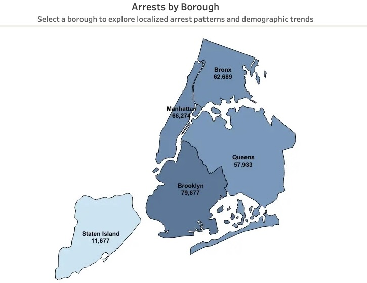
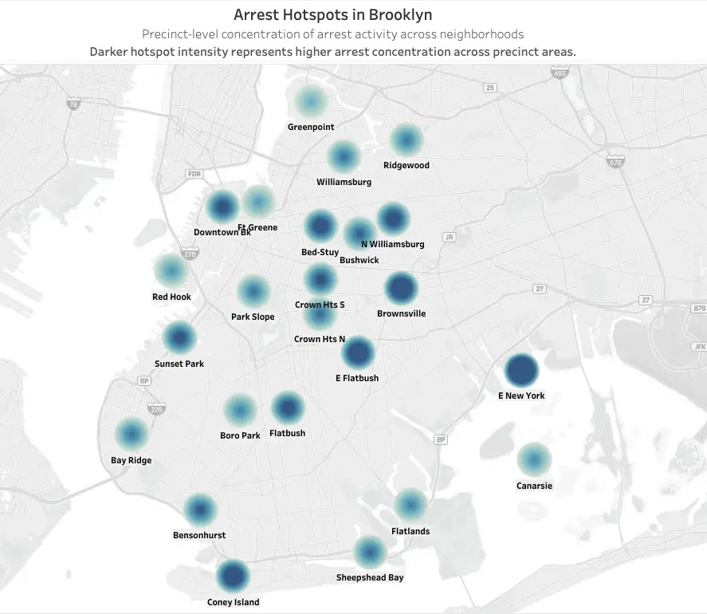
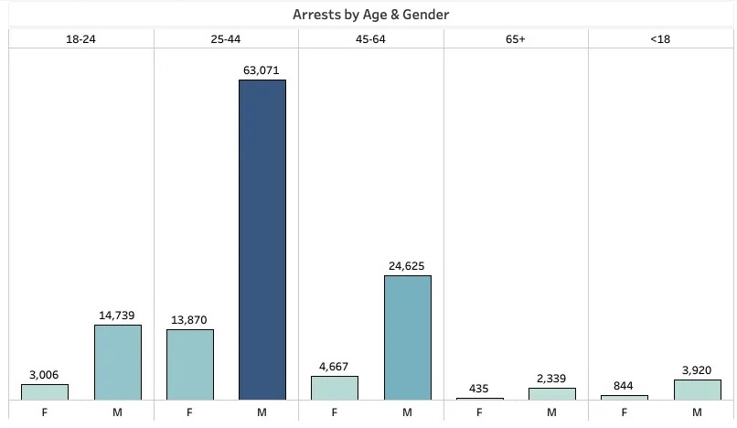
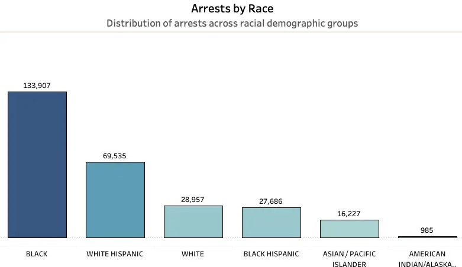
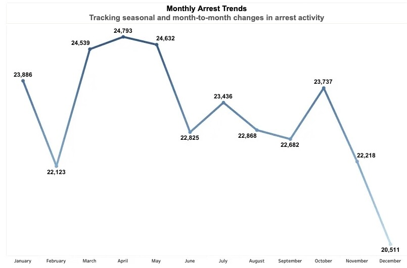
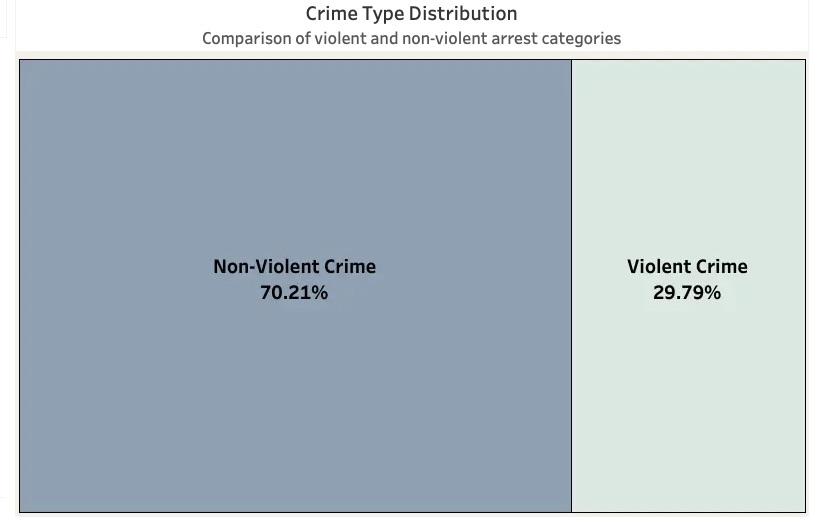

Prioritize local analysis
Examine precinct and neighborhood patterns alongside localized context.
Public safety analytics · 2025
What borough, neighborhood, demographic, and monthly data reveal, and what they cannot answer alone.
The question
This analysis explores 2025 NYC arrest volume by borough, neighborhood, age, gender, race, offense category, and month. The goal is to turn a large public-safety dataset into a clear starting point for responsible investigation.
These are arrest counts, not population-adjusted arrest rates. They should be interpreted with population size, local context, and additional community-level data.
01 · Citywide view
Across the five boroughs, Brooklyn led recorded arrest activity in 2025, followed by Manhattan and the Bronx.

Local context matters
Citywide counts are only the first layer. Neighborhood-level patterns help identify where a deeper review may be useful.
02 · Neighborhood detail
Hotspot activity is concentrated in particular precinct areas, making localized analysis more useful than borough totals alone.

03 · Demographic distribution
Arrest counts show the largest volume among males ages 25–44. Demographic counts need population and socioeconomic context for responsible interpretation.


Counts identify where recorded volume is concentrated; they do not measure population rates or explain why differences appear.
04 · Time and offense
Monthly volume rose in the spring, while non-violent offenses made up the larger share of 2025 recorded arrests.


05 · Next questions
Examine precinct and neighborhood patterns alongside localized context.
Combine counts with population, socioeconomic, and community-level indicators.
Compare multiple years to see which patterns persist or shift.
Project resources
Use the dashboard to explore the data interactively, review the SQL workflow, or see the original presentation deck.